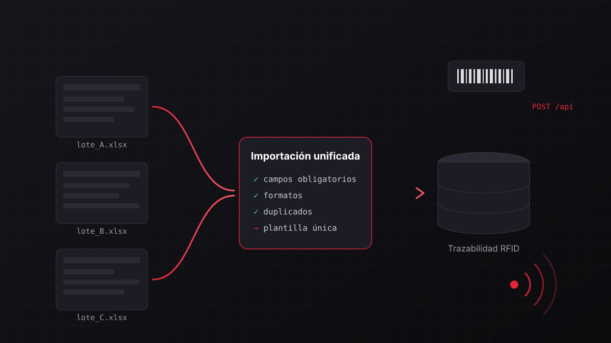

Principal
- Python
- Django
- PostgreSQL
- Git & GitHub
- pytest
- APIs REST
Cúcuta, Colombia · Disponible para trabajo remoto
Ingeniero de Sistemas · Desarrollador Backend
Desarrollo web con Django y Spring Boot. Construyo soluciones digitales funcionales y orientadas a las necesidades del usuario, con foco en backend, datos y APIs.
Soy desarrollador web enfocado en crear soluciones digitales modernas, funcionales y orientadas a las necesidades del usuario. Cuento con experiencia en desarrollo frontend, backend, bases de datos e integración de tecnologías para construir aplicaciones eficientes y escalables.
Me apasionan la tecnología, el aprendizaje continuo y la resolución de problemas reales mediante software. Actualmente curso Ingeniería de Sistemas y trabajo de forma remota, abierto a oportunidades de empleo y proyectos freelance, especialmente con micro y pequeñas empresas que necesiten una presencia digital sólida.
Herramientas con las que trabajo, agrupadas según el nivel de uso.
IngeniaLink S.A.S.
Tripleten
Trabajo real que combina desarrollo web, backend, datos y APIs.
Frontend · Landing page · En producción
Fisioterapia, estética y bienestar — Cúcuta
Landing page profesional que permite a los pacientes conocer los servicios de la clínica y solicitar una cita directamente desde la página. El flujo de agendamiento selecciona área y servicio, genera los horarios disponibles según el día, bloquea fechas pasadas y domingos, valida el formulario y construye automáticamente el mensaje de WhatsApp con los datos de la cita.

Backend · Datos · Web · Proyecto profesional
IngeniaLink S.A.S.
Cada lote de etiquetas RFID debía registrarse con tres archivos Excel distintos, un proceso lento, ambiguo y propenso a errores. Diseñé una plantilla consolidada y un módulo de validación e importación automatizada hacia la base de datos en la nube, además de una API para registrar ventas por código de barras en tiempo real. En paralelo, mejoré la web corporativa, su contenido y su posicionamiento SEO.
Universidad Francisco de Paula Santander
En curso · Cúcuta, Colombia
¿Tienes un proyecto o una vacante? Escríbeme y conversemos.